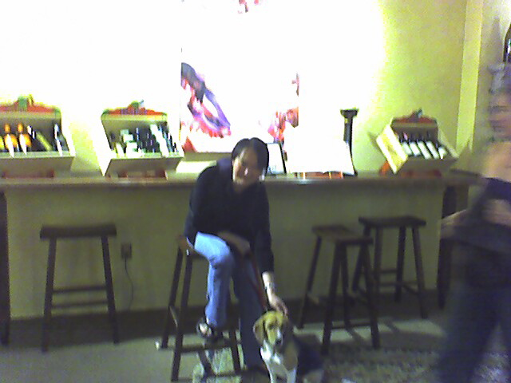

<--Previous Up Next-->

A little blurred
Dogs are welcome in the Cabana Tasting Room and Wine Bar, an oasis of L.A. style in the heart of quaint Solvang. The painting behind Penny's head not having come out, this photo turns out to be suitable for all audiences after all.